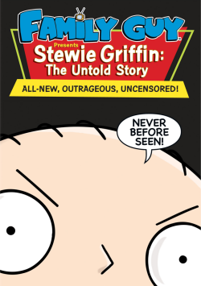

"Stewie" Griffin is a fictional character from the animated television series Family Guy. He was supposedly born on September 11th 1998. He is the youngest of Peter and Lois Griffin, the youngest brother of Meg and the younger brother of Chris. Initially obsessed by world domination, He is a highly precocious todler who acts as an adult. He has also come to have a very close friendship with his anthropomophic dog Brian and his toy Rupert. Stewie has won the show multiple awards with his wild imagination and hillarious cut aways. He is my best character in that show.
Here are some of my works
Inventions Arts CreationsVICTORY SHALL BE MINE
